Pobreza
La pobreza limita el acceso a educación, salud y vivienda.
Se relaciona con desigualdad social.
Reducirla requiere políticas públicas.
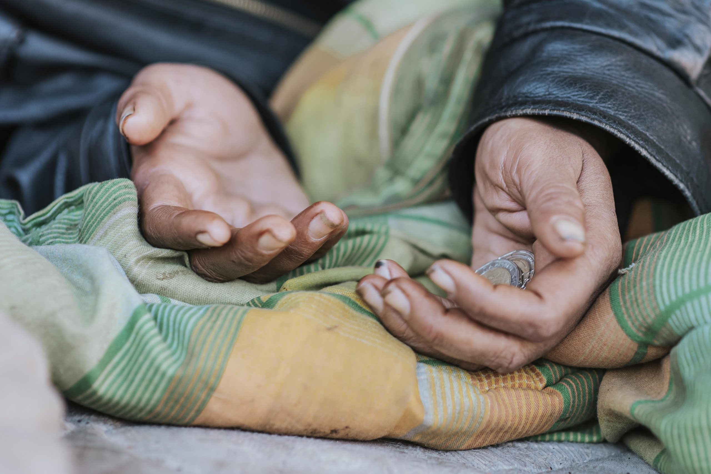

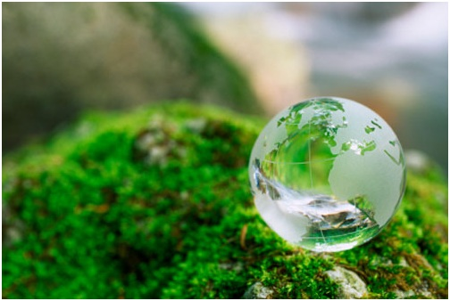
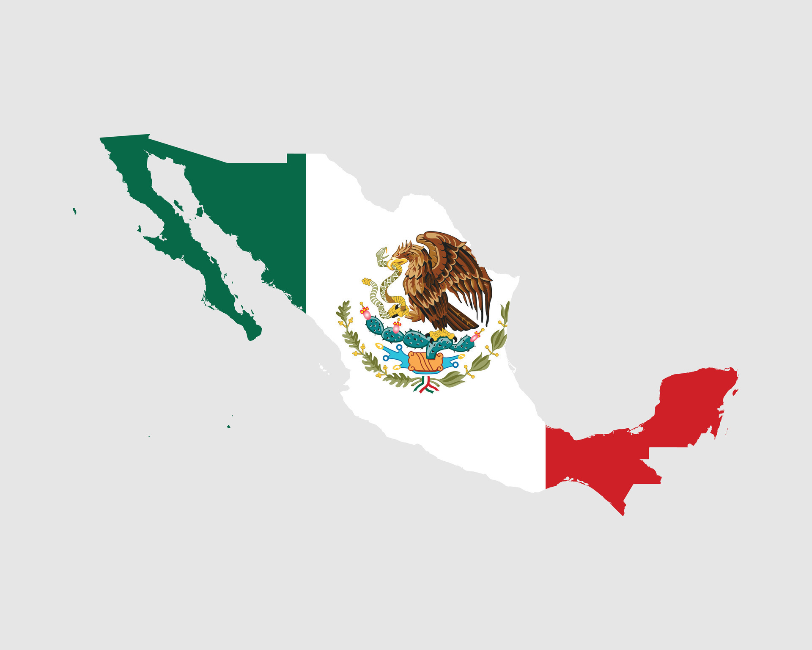
Nombre: Hernández Lira José Enrique
Carrera: Ingeniería en Sistemas Computacionales
Materia: Recursos y Necesidades de México
Facultad: Facultad de Ingeniería
México cuenta con amplias posibilidades para aprovechar energías renovables.
La energía solar y eólica ayudan a reducir contaminación.
Su desarrollo impulsa tecnología y empleo.
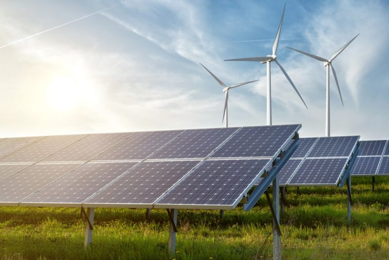
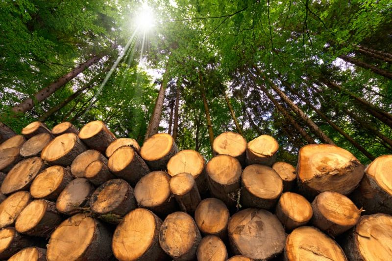
El petróleo ha sido base del crecimiento económico.
Su explotación genera ingresos pero también contaminación.
Es importante diversificar las fuentes de energía.
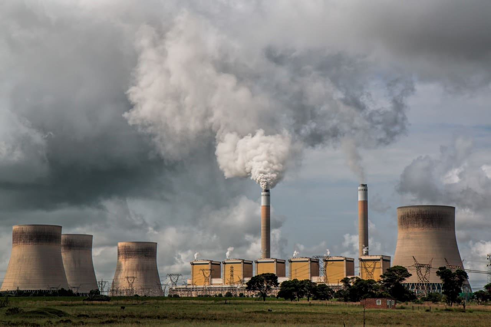
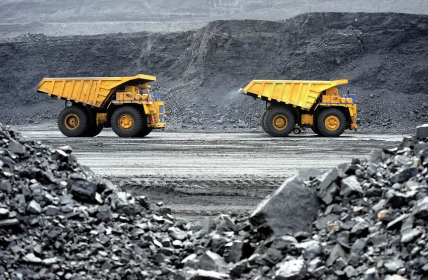
La contaminación afecta aire, agua y suelo.
La deforestación provoca pérdida de biodiversidad.
Es necesario promover políticas ambientales.
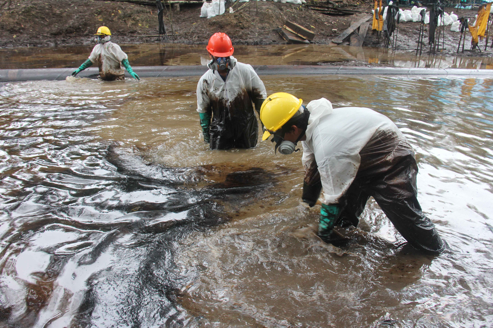
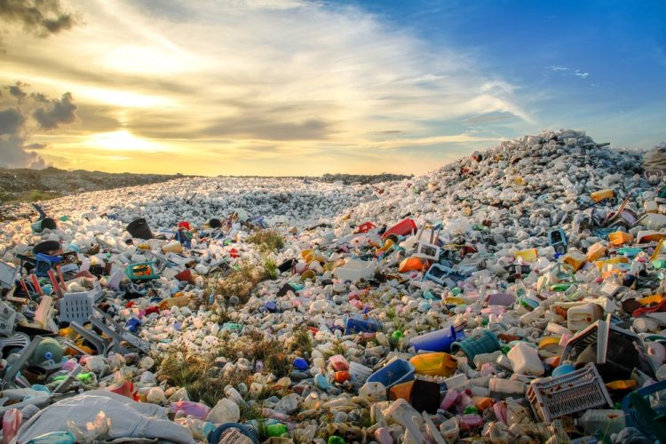
El crecimiento poblacional genera mayor demanda de servicios.
Las ciudades concentran la mayoría de habitantes.
La desigualdad social genera pobreza y desempleo.
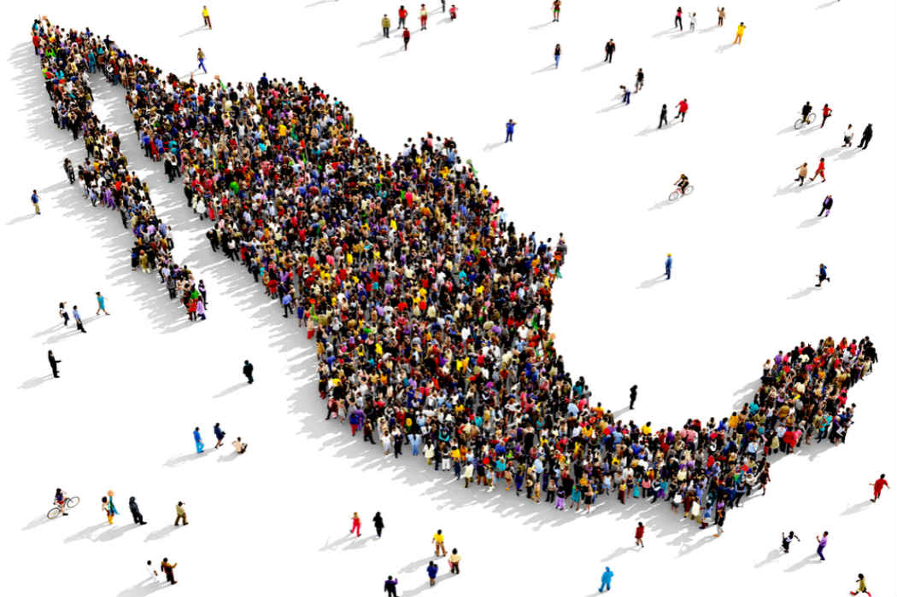
La pobreza limita el acceso a educación, salud y vivienda.
Se relaciona con desigualdad social.
Reducirla requiere políticas públicas.

El desempleo afecta el desarrollo económico.
Provoca inestabilidad social.
La inversión y capacitación ayudan a reducirlo.
La economía informal genera ingresos sin regulación.
No ofrece seguridad social.
Reducirla requiere fortalecer el empleo formal.
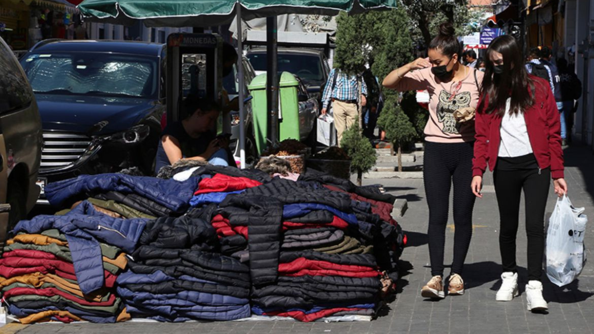
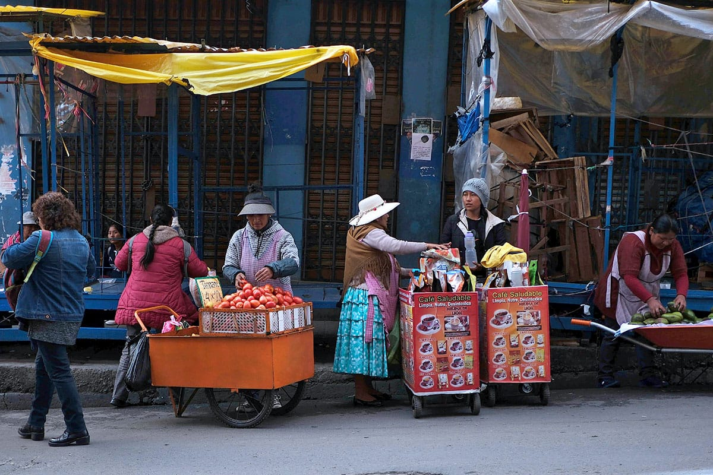
El sector agropecuario es esencial para seguridad alimentaria y empleo rural.
Enfrenta retos de baja productividad y desigualdad regional.
La modernización sustentable equilibra producción y conservación ambiental.
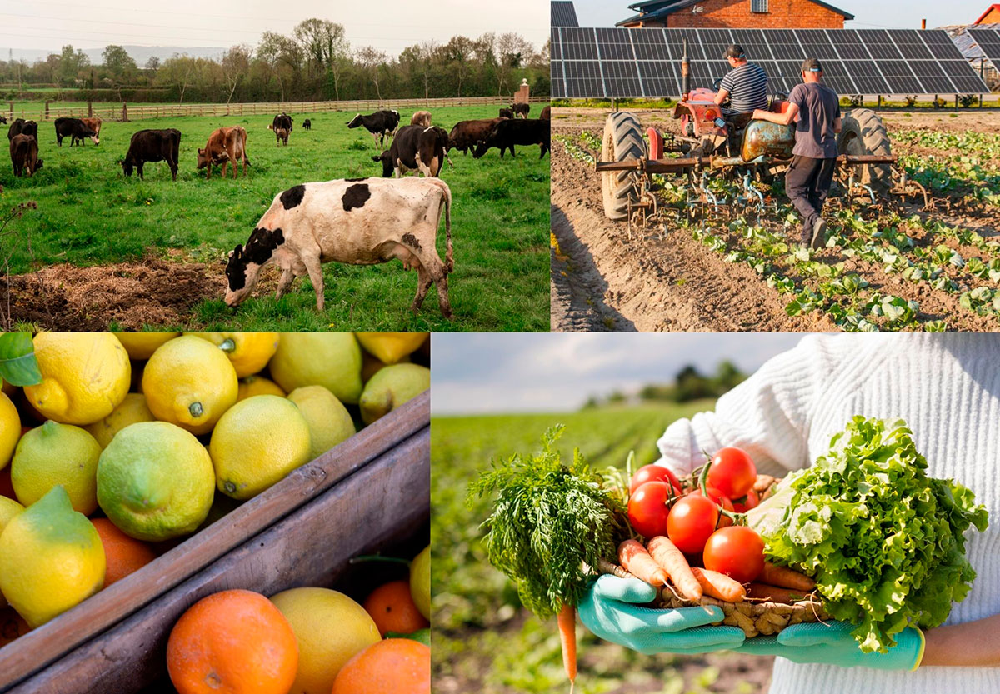
La industria transforma materias primas y genera empleo.
Existen desigualdades regionales en infraestructura.
Innovación y diversificación fortalecen competitividad internacional.
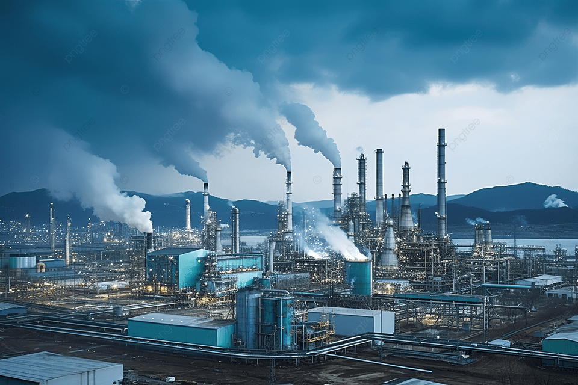
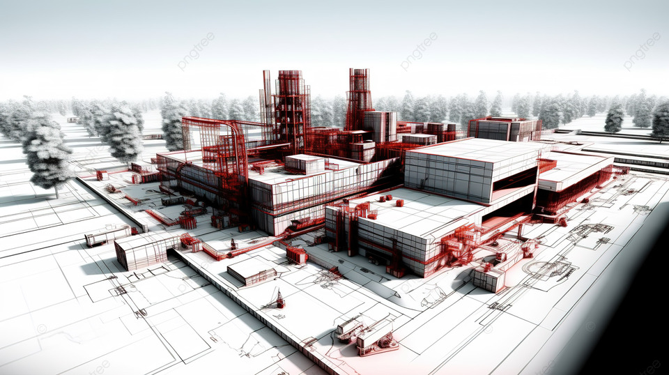
El sector servicios representa gran parte del PIB nacional.
Incluye comercio, transporte y telecomunicaciones.
Su expansión refleja cambios estructurales en la economía.
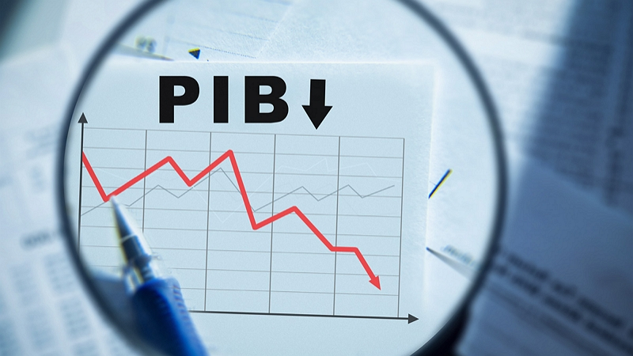
Conecta regiones y reduce costos productivos.
La infraestructura insuficiente limita competitividad.
Movilidad sustentable reduce emisiones.
La conectividad impulsa desarrollo moderno.
La brecha digital genera desigualdad.
Invertir en tecnología fortalece competitividad.
La vivienda digna es indicador de bienestar.
El crecimiento urbano desordenado genera problemas sociales.
La planeación sustentable mejora calidad de vida.
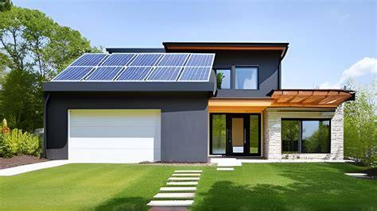
El acceso al agua es esencial para la salud.
La escasez y contaminación son retos crecientes.
La gestión sustentable requiere infraestructura adecuada.
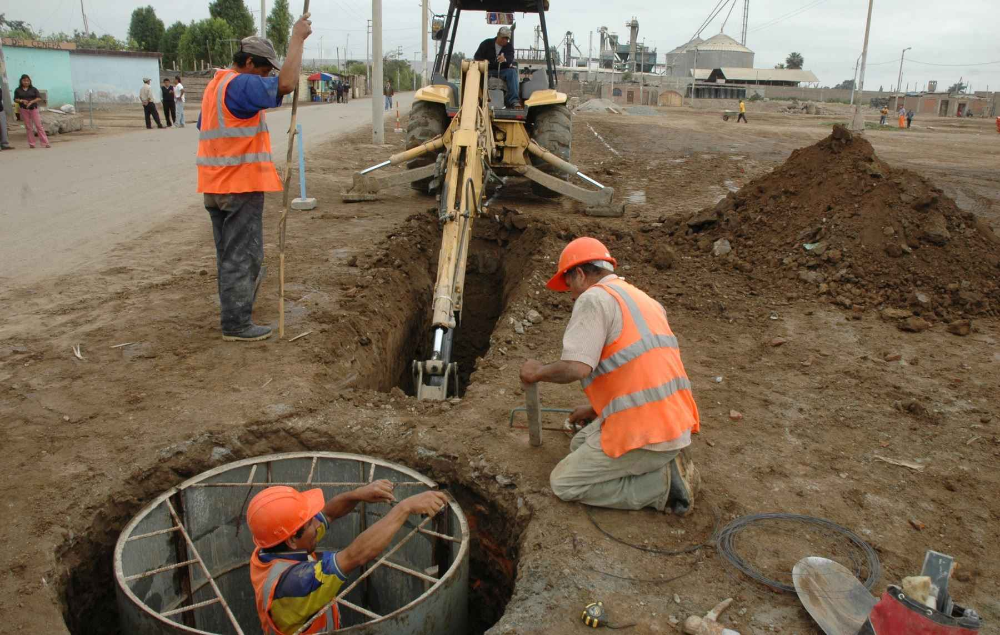
La educación impulsa movilidad social y productividad.
Persisten brechas regionales de calidad.
Invertir en capital humano fortalece desarrollo sustentable.